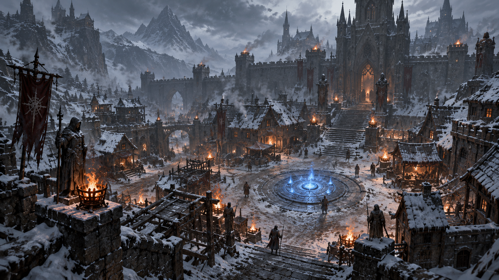
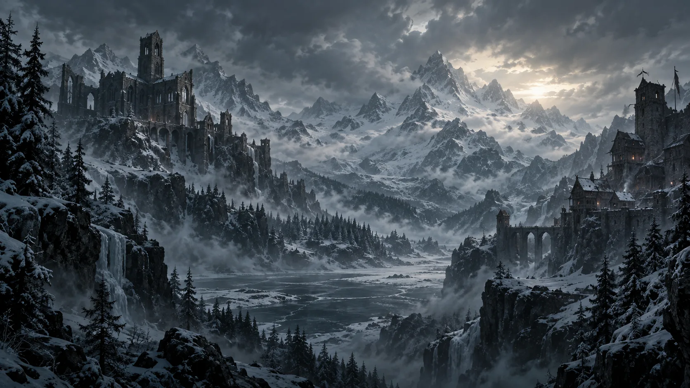
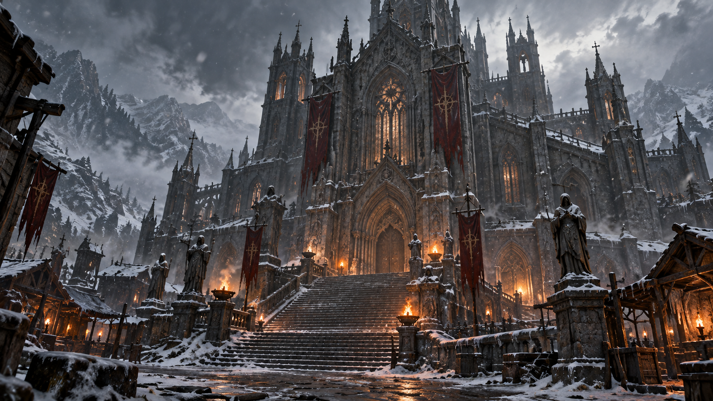
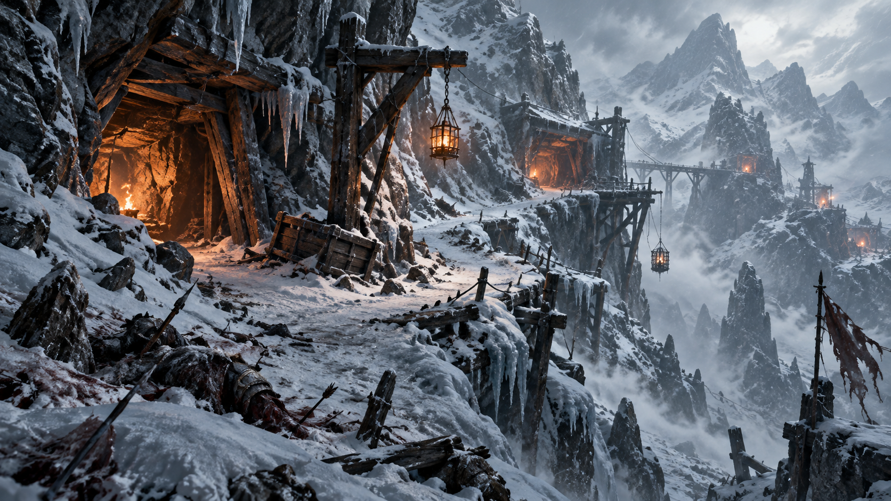

Kyovashad
Die letzte große befestigte Stadt des Nordens. Hinter ihren Mauern ringen Wache, Klerus und Bevölkerung um Ordnung, während draußen Kälte und Kulte näher rücken.
Zwischen eisigen Pässen, verfallenen Klöstern und der befestigten Stadt Kyovashad bestimmt der Glaube das Überleben. Eine erbarmungslose Gebirgsregion voller Minen, Festungen und Kultstätten, in der die Kathedrale des Lichts um Einfluss und Sicherheit ringt.
Die Zersplitterten Gipfel gehören zu den unwirtlichsten Gegenden Sanktuarios. Zwischen verschneiten Pässen, schroffen Felswänden und den Ruinen längst vergangener Kulturen klammern sich kleine Siedlungen an ein karges Leben. Die Isolation der Berge zog über Jahrhunderte Gläubige und Einsiedler an – in der Zeit von Diablo IV vor allem Anhänger der Kathedrale des Lichts. Kyovashad entwickelte sich dabei zum Machtzentrum der Kirche in der Region.
Doch unter Kirchen und Klöstern liegen wesentlich ältere Spuren. Manche Heiligtümer wurden offenbar auf den Überresten früherer Kulturen errichtet, deren Glaubensvorstellungen heute kaum noch verstanden werden. Während die Kathedrale Schutz und Ordnung verspricht, leben die Bewohner außerhalb ihrer Mauern ständig mit Kälte, Hunger und den Kreaturen, die nachts aus Höhlen und Wäldern hervorkommen.
Notiz von Archivar Valen · Befund unsicherDie Fundamente sind älter als die heutigen Mauern. Wer sie errichtete, weiß niemand mit Sicherheit.


Die letzte große befestigte Stadt des Nordens. Hinter ihren Mauern ringen Wache, Klerus und Bevölkerung um Ordnung, während draußen Kälte und Kulte näher rücken.

Die Kirche prägt Kyovashad und viele Siedlungen der Region; Inarius ist die zentrale Gestalt ihres Glaubens.

Verlassene Silberminen und zugeschneite Passstraßen verbergen alte Kultstätten.
Die Menschen der Zersplitterten Gipfel sind durch harte Winter und ständige Bedrohung abgehärtet. Wachen, Jäger und Geistliche halten ein brüchiges Gleichgewicht zwischen Kyovashad und den entlegenen Siedlungen aufrecht.
In den Randgebieten lauern Wölfe, umherziehende Banditen und untote Überreste vergangener Schlachten. Besonders beunruhigend ist ein Kult, der in Lilith eine Erlöserin sieht und seine Anhänger in eisigen Ritualen „reinigt“ – seine Spuren reichen bis vor die Tore Kyovashads.
Die Zersplitterten Gipfel sind ein Schwerpunkt der Kathedrale des Lichts. In Kyovashad und den umliegenden Siedlungen ist ihr Einfluss bis heute spürbar.
Die Kathedrale verspricht Schutz und Ordnung, doch Kälte, Gewalt und Liliths Anhänger stellen ihre Autorität auch in dieser Region auf die Probe.
Mit Liliths Rückkehr wird genau hier die erste Welle ihres Einflusses sichtbar – ein Vorzeichen für das, was dem restlichen Sanktuario noch bevorsteht.